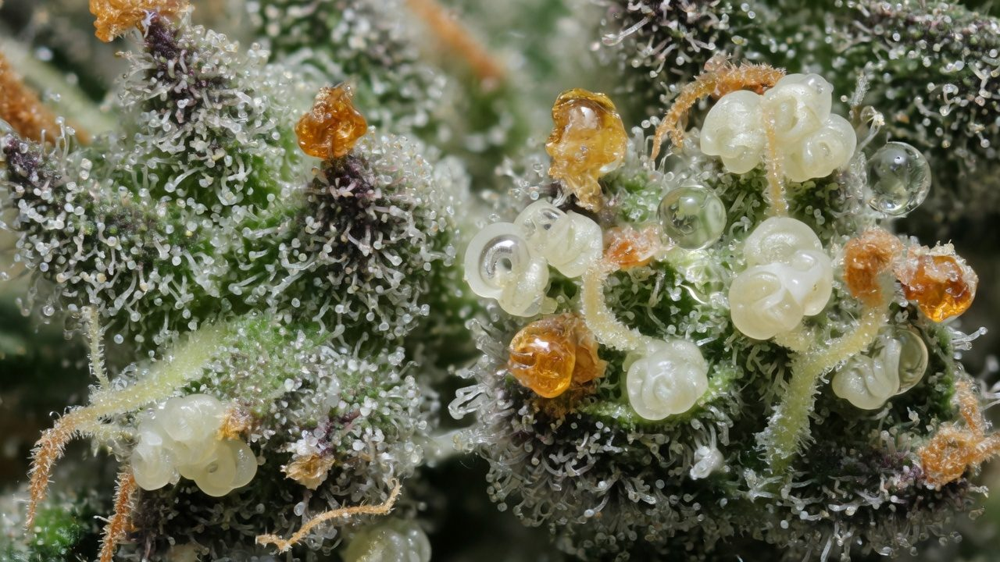
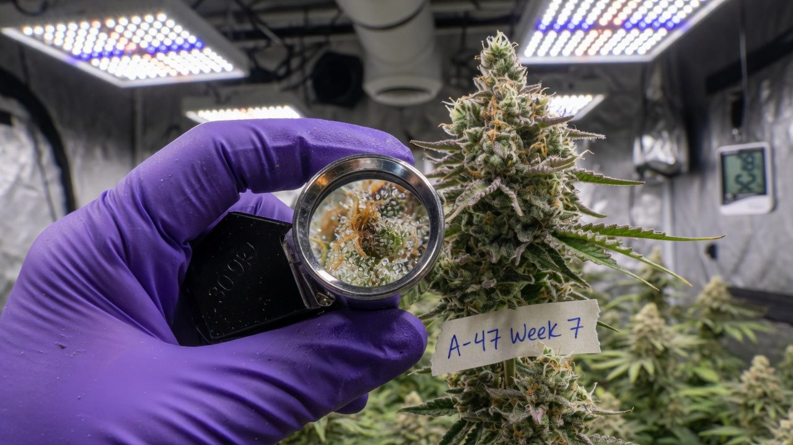
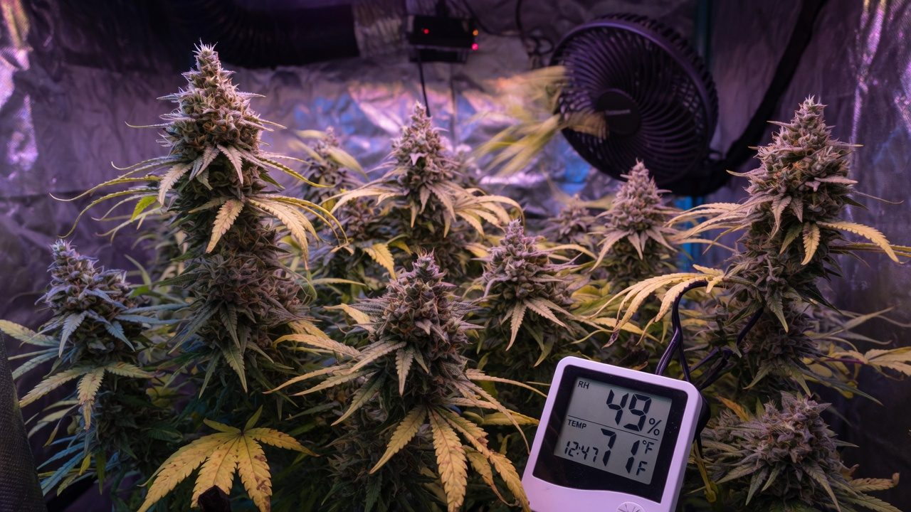
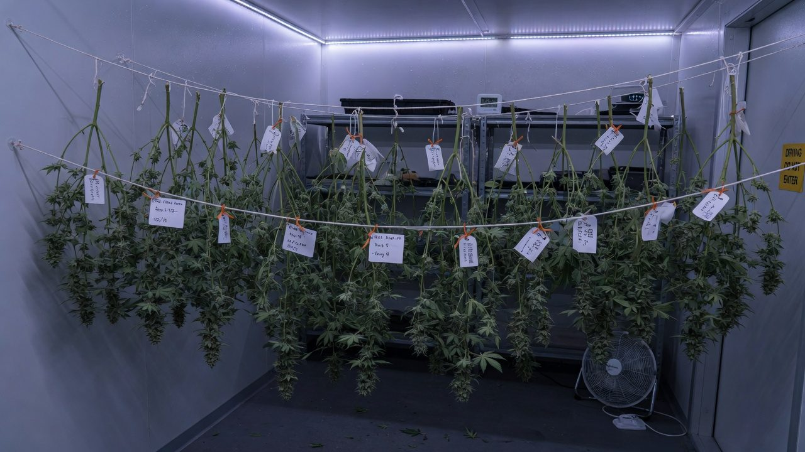

Ripening, flush, and the time to harvest
This paper shows the ripening of cannabis buds in the last two weeks and how to select the time to harvest. You will know how to read trichomes accurately with a loupe. You will know which harvest window is correct for your product. You will know the results of tests on flush. You will also know how to prevent botrytis. Botrytis can cause damage to all the crop that you made in eighteen weeks.
Purpose and scope
After eighteen weeks of tasks, you must make one decision: the time to cut the plant. If you harvest before the correct time, you do not get the weight and maturity that the plant continues to make. If you harvest after the correct time, the plant adds only a small quantity of weight, but the flower has a risk of bud rot.
This paper is about the last stage. It shows the ripening of the buds and how to read the buds correctly. It also shows how to select the time of harvest that is correct for your product.
We wrote this paper for a grower who makes a first or second crop. Thus we give information about each term. We also give a grade to the data for each item. When the data are strong, we tell you this.
Some methods that growers use have no test data to show that they are correct. These methods are mostly for the last stage of flowering. We tell you this clearly. We use the same procedure for each of these items: flush, the percentage of amber, 48 hours of darkness, and UV finishers. For each item, we show the test data, the method of growers, and the information that suppliers give.
Two tasks occur at the same time in the last two weeks. The first task is to let the plant complete ripening. The weight and the resin maturity continue to increase for a longer time than the growers of a first crop think[6]. The second task is to prevent damage to the crop that you made. In a canopy with high density, the risk of botrytis is at its maximum during ripening. One wet night can cause more damage than the weight and maturity that one more week of ripening adds[12].
This paper is for a person who is in week 6 of flowering or after this week. The person wants to know the time to the harvest. The paper about the weeks of flowering is the paper before this paper. The paper about harvest, drying, trimming and curing is the paper after this paper. This paper stops when you cut the first plant.
Definitions
This paper uses these eight terms many times. Make sure that you know the terms before you continue.
Evidence and limitations
We want each paper to be correct. Thus we examine each paper for information that is not solid. This information comes from the view of one grower, from a small number of sources, or from grower methods that have no controlled test. We identify this information, and we do not show it as solid.
Frequently there is no paper for the decision that you must make. Then we use the reports of other growers and the methods that work in the rooms that we know. This information can help you, but it is not the result of a laboratory test. Use the methods that work for your plants, for your room and for your meters. If a table does not agree with your crop, use the data from your crop and record the difference.
- The primary definitions and the units of measurement in the paper
- Safety limits that have a citation to a regulation or a specification
- Target ranges for light, climate and feed in each stage. They are start values that you can change.
- SOPs that work in many rooms, but you must adjust them for your genetics and meters
- A number for yield or potency that you will always get, with no test at many sites
- Controller setpoints from a different facility, with no new calibration
If you find an error, make a report. We will correct it. Make the report on GitHub, with the name of the paper and the information that is incorrect. If you have a source, include it: Make a report of an accuracy problem. The regulations, labels and licenses of your area always override each procedure in these papers. The label weak in a paper shows the points where the risk of an error is highest.
Ripening windows for each product
The decision to harvest has three parts. First, read ripeness from the trichomes on the surface of the calyx. Do not read ripeness from the calendar or from the pistils.
Second, the correct time in ripening is different for each product. A hash maker harvests before a flower grower does. For biomass for extraction, the harvest window is the widest.
Third, cut before your target only if there is pressure from mold. Flower without mold that you harvest some days before your target is always better than flower that has full ripeness and botrytis.
Usually it is correct to wait. Many tests of the time of harvest find that the weight of the inflorescence continues to increase in the last stage of ripening. One test was in a grow room with controlled conditions, with a CBD cultivar. In this test, the dry weight of the flower increased at each harvest time from week 5 to week 11. The concentration of cannabinoids did not change. The best total yield was at week 9 and not at week 7[6].
Measurements of cannabinoids during flowering show the same trend. The content increases to a peak that is different for each cultivar. The peak occurs at different times for different chemotypes[3].
Read the trichomes on the calyx at mid-cola, at an interval of two days from week 7.
Cut at the stage that is correct for your product. For hash, cut when most heads are cloudy and the percentage of amber heads is at its minimum. For usual flower, cut when most heads are cloudy and 5–15% of the heads are amber.
If botrytis occurs, do not wait. Harvest the plant immediately.

Ripening biology
Four changes that you can see occur together in the last weeks, and each change is a signal that you can read. When you know the cause of each change, you can find the error if one signal is incorrect.
The color of the trichomes changes in ripening. In the last stage of flowering, the surface of the flower has many capitate-stalked trichomes. These trichomes are large glands with a stalk. Most resin is in these glands. Tests with a microscope show that these glands change in shape and in chemical content while ripening continues. The contents change, the stalks become longer, and the color of the head shows the condition of its contents[1].
A head is clear (transparent) when the resin is thin and its quantity increases. When the contents are at maturity, the head becomes cloudy (white and not transparent). When oxidation of the resin starts, the head becomes amber. The speed of this change and the quantity of amber heads are very different for each genotype and for each age of the plant. Some cultivars show almost no amber before the heads collapse[2].
The cannabinoids increase to a peak, and then oxidation of the resin starts. Measurements each week during flowering show that THC and CBD increase to a peak that is different for each cultivar. The peak occurs in the last stage of the cycle[3]. After the peak, THC changes slowly into CBN, a related cannabinoid with different properties. This chemical change occurs in one direction only. The change is oxidation.
Tests show oxidation in cannabis that is in storage. In these tests, the CBN:THC ratio shows how long the samples were in storage[4]. Amber heads show the start of this change on the plant.
Some growers think that amber heads give a sedative effect (‘couch-lock’) because of CBN. Be careful: the data on this effect for persons are weak. Amber shows that the resin is after its peak. Amber does not give information about the effect of the flower.
The pistils become brown and bend. At the start, the stigmas are white and can receive pollen. Then they become brown and bend while ripening continues. Use the pistils only as an approximate indication of the time in ripening. If most pistils are white, it is not the time to harvest.
But stress and pollen also cause the pistils to change, and not only ripeness. Foxtailing starts the pistils again. The pistils show you when to start to examine the trichomes with a loupe. Do not use the pistils to make the decision to harvest.
The calyxes increase in size and the fade occurs. In the last weeks, the bracts become larger, and you can see this. The buds have a higher density, and the fan leaves become yellow from the bottom leaves to the top leaves. The fade is the movement of mobile nutrients from the leaves to the flower.
Leaves in senescence send mobile nutrients (mostly nitrogen) to the flower. Tests on many crop species show the same movement of nutrients[5].
A small fade in week 8 shows that the plant completes ripening at the correct time. It is not a deficiency. Do not correct it. A strong fade with dry leaves in week 6 is a problem. Refer to Troubleshooting.
The color change shows the chemical condition of the resin. New, thin resin is clear. Contents at maturity scatter the light, and the head is cloudy. Resin in oxidation becomes yellow. Thus the reading of the color is a correct method, but the color is only a sign and not a measurement in a laboratory. Two cultivars at the same color stage can have different chemistry[2].

Ripeness check with a loupe
The cause of most incorrect harvest decisions is the sampling. The grower reads one area that is easy to see, or reads the sugar leaves, or reads a different bud each time. As a result, the data change from one reading to the next. If you correct the sampling, the decision is easy.
Tools. A 30–60x loupe is sufficient, and its cost is very low. A USB microscope (60–200x), or a microscope that you attach to a phone, has a low cost and is easier for the eyes. With a microscope, you can record images of the same position on different days. A microscope also makes the difference between clear and cloudy heads easier to see.
Use white light with the color of daylight. With HPS lamps (orange light), all the heads show an amber color. With LED lamps that have blue and purple light, all the heads show a purple color. If the position of the canopy makes the reading not easy, cut one calyx and read it on a bench. An image that is stable is better than an image that moves.
Where. Read the surface of the calyxes at mid-cola, at the middle height of the canopy. Do not read the sugar leaves. The small leaves in the bud have trichomes that become cloudy and then amber some days before the trichomes on the surface of the calyx. If you read these leaves, you can harvest a week before the correct time. This error is usual.
Identify two or three positions on the branch with a small piece of tape. Read the same positions each time. Also read one top cola, to monitor the vertical gradient[7].
Frequency. Read the trichomes at an interval of two days from week 7, or when most pistils are brown. The trichome stages change in some days. As a result, two readings each week give you a trend and not only one value. Record an estimate each time, for example ‘d52: ~15% clear / 80% cloudy / 5% amber, mid’. The trend between the readings is the primary signal.
- Use the same positions each time: 2–3 positions with a mark on the calyx at mid-cola, and one top cola.
- Use the same light: white light with the color of daylight, or the room lights. Do not use the light of HPS lamps.
- Read the surface of the calyx. Do not read the trichomes on the sugar leaves.
- Make an estimate of the percentages for all the heads in the loupe, and not for one gland.
- Record the readings. Three readings give a trend. With no readings, you have no data.
Harvest windows for each type of product
Do not start with ‘when do I harvest?’ Start with ‘what is this flower for?’ because each product has a different window.
Ice-water hash and rosin: harvest at the maximum of cloudy heads, before amber. To make hash, you use a mechanical procedure to disconnect the trichome heads from the plant. The heads must have no damage. They must have their maximum structure: they must be at full size, cloudy, and easy to remove from the stalk.
Hash makers try to get the highest number of cloudy heads with a minimum of amber heads. Amber heads are after the peak, and measurements show that they are smaller. The hash and the rosin from amber heads have a darker color and a greasy texture[8]. For some cultivars, you cannot prevent 10–20% amber at the cloudy peak, and the hash is satisfactory. A hash maker who wants high quality does not wait for amber.
Flower: the usual method is to harvest when most heads are cloudy and 5–15% of the heads are amber. For flower that persons smoke, you can wait until the first amber heads occur. Then the flower has full maturity, full weight, and a full aroma.
Some growers want a ‘heavier’ effect, and they wait until 20–30% of the heads are amber. Be careful: if you wait for this effect, you get three results. The first result is oxidation of the resin, which tests show[4]. The second result is effects for which there are no test data. The third result is more days with a risk of rot[12].
Biomass for extraction (distillate cartridges): the widest window. Distillation makes the extract clean. Thus the precision of the trichome stage is not very important. The total cannabinoid content and clean biomass with no mold are the most important.
If you harvest some days before or after the peak, the change is small. If botrytis occurs in the biomass, or if you harvest after the window and the quality of the flower decreases, the potency decreases. You can be less careful about ripeness. You must be careful about sanitation.
| Product | Harvest at | Cause | Result if you harvest after the window |
|---|---|---|---|
| Ice-water hash / rosin | Maximum of cloudy heads, minimum of amber heads | Heads at full size with no damage are easy to remove. They give hash and rosin that are very clean. | The hash has a darker color and a greasy texture. Amber heads are smaller and give an unsatisfactory result in the wash. |
| Flower (usual) | Most heads cloudy, 5-15% amber | Full weight and aroma at resin maturity | Growers think that the smoke is not ‘smooth’ and that the flower has a sedative effect, but no test shows this. The risk of rot increases. |
| Flower (‘heavier’ effect) | 15-30% amber | Growers wait after full ripeness because they want a ‘heavier’ effect. | Tests show oxidation of the resin. This harvest has the longest time with a risk of rot of all flower harvests. |
| Distillate cartridges / extract | Some days before or after the peak | Distillation makes the extract clean, thus a small error in the trichome stage is not important. | Only mold and a harvest a very long time after the peak are a problem. |
If you use one cultivar for hash and for flower, do a staggered harvest for each product. Harvest the hash plants (or the top canopy for hash) when the number of cloudy heads is at its maximum. Give the flower plants more days of ripening. Thus you have one room and two harvests, and each product is in its window.
Flush and the results of tests
Many growers apply only water in the last 7–14 days. They think that the plant then uses the nutrients that it keeps in its tissue. They also think that the smoke is more ‘smooth’, the flavor is better, and the ash is white. Growers use this method frequently. But almost no test data show that it is correct. Here are the results of tests.
The test by Rx Green Technologies. Growers refer to this test most frequently. In the test, plants of the cultivar Cherry Diesel had a flush of 0, 7, 10 or 14 days before the harvest. After the harvest, the test measured the plants.
The flush time did not cause statistically significant differences in the yield (average 97.3 g (3.4 oz) for each plant), the THC (average 21.9%), or the terpenes. The flush did not decrease the mineral content of the flower by the quantity that growers think. Nitrogen was only approximately 6.7% less after 14 days, and iron and zinc were higher in flower with a flush.
A blind panel is a group of persons who do not know which samples had a flush. This panel did not find the samples with a flush. The trend was to the sample with no flush. 36% of the panel found the smoke of the 0-day flush ‘smooth’. 19.4% of the panel found the smoke of the 14-day flush ‘smooth’ (this difference is not statistically significant)[9].
The test at Guelph shows the same result. An MSc thesis at the University of Guelph gives the results of tests on medical cannabis with no nutrients at the end of the cycle. The tests found that a flush did not decrease the element content of the flower by an important quantity, and did not change the yield[10].
The two sources have limits. One source is a white paper from a manufacturer, with one cultivar and a small panel. The other source is a thesis. It has no journal peer review (a subsequent erratum applies to a different chapter). But the two tests have no connection, and they show the same result. We do not know of a controlled test that shows the opposite result.
A flush cleans the substrate and not the flower. A flush cleans the root zone. The minerals in the tissue of the buds came there through the plant. Water around the roots does not remove them from the tissue.
In the last stage of the cycle, the senescence of the leaves moves mobile nutrients out of the leaves and into the flower[5]. This movement occurs with or without a flush.
A long flush does decrease the EC of the substrate very quickly. The plant must then use the nutrients that it keeps before the correct time. The fade can become faster. If the flush is very long, the weight that the plant adds in the last stage can be less. Tests show that the plant adds this weight[6].
| Claim | Results of tests | Grade |
|---|---|---|
| Smoke that is more ‘smooth’, better flavor | A blind panel did not find the flush. The trend was to the flower with no flush. | No test shows this[9] |
| Removes minerals from the flower | The mineral content of the flower is almost the same. Iron and zinc are higher in flower with a flush. | Tests show the opposite[9][10] |
| White ash shows that the flush is correct | The color of the ash changes with combustion and moisture. No test shows that the color of the ash is a sign of a flush. | No test data |
| A flush has no bad effect | A long flush can cause senescence before the correct time, while the plant continues to add weight. | Incorrect: there is a bad effect[6] |
| A lower feed EC in the last stage | Uptake decreases while senescence continues. A lower EC that agrees with the uptake is agronomy and not a flush. | A satisfactory method between a flush and no flush |
Some growers do a flush, and some growers do not do a flush. In many SOPs of commercial growers, the procedure is a flush with only water for 7–14 days. One cause is that growers always did a flush. A second cause is that buyers want to know if the flower had a flush, and this has a strong effect on commercial growers.
Other growers apply feed at full strength until the day of the harvest, and they refer to the tests above. Many growers use a method between a flush and feed at full strength. They decrease the feed EC slowly in the last week, to agree with the lower uptake. The plant continues to receive feed.
The data show that a long flush with only water does not make the smoke better, and that persons cannot find a difference. If you do a flush, keep it short. No test shows a good effect that is sufficient for three weeks of only water.

Climate control in the last stage of flowering
In the last two weeks, one task for the climate is more important than the other tasks. The changes of temperature are a method of growers, and they are not necessary. The control of humidity is necessary to keep the crop in good condition. First control the limit for the relative humidity (RH). Then do the other controls.
Temperature: a frequent method, but weak data. Most growers decrease the day temperature by a small quantity in the last two weeks, from approximately 26 to 23 °C (79 to 73 °F). They also decrease the night temperature to 21 to 18 °C (70 to 64 °F). The claims for this method are terpenes that stay in the flower, buds with a higher density, and purple color. Almost no controlled test on cannabis examines these claims. Cool nights do cause purple color in genotypes that can make anthocyanin, but no test shows the claims for potency and for terpenes.
The risk of this method is low, and the method is satisfactory. But the method has one side effect, and you must know it. Warm air can hold more water vapor than cool air. When the temperature decreases, the same quantity of moisture in the room is a larger percentage of the capacity of the air. As a result, the relative humidity increases, but you do not add water. Each degree of lower temperature increases the RH, and your dehumidification must remove more water.
Humidity: this control is necessary. Buds in ripening have a high density, they make shade for each other, and they keep moisture. Bud rot, from Botrytis cinerea, is the problem that causes the most damage in the last stage. Tests in greenhouses show that the risk of infection with bud rot increases when the humidity and the bud density increase. The pathogen is in the cola, where you cannot see it, until the damage occurs[11].
Spores occur in almost all areas. Epidemiology tests show that you control the spores with the environment and with sanitation, and that you cannot remove all the spores[12].
Use these procedures. Hold the RH at 45–55%. Do not let the RH become more than 58%. Keep a flow of air through the canopy. Do not point a strong airflow at the canopy. Monitor the change at lights-off.
At lights-off, the temperature decreases, the RH increases quickly, and condensation can occur on colas with high density. Most rot starts in this one hour.
UV ‘finishers’: be careful with the claims of the suppliers. The claim is to apply strong UV in the last weeks, to make the THC higher. Controlled tests frequently show that this claim is incorrect. The largest test of light intensity in a grow room found that more UV light did not increase the yield or the cannabinoid content[13].
A test in 2024 of the light spectrum found that the UV treatments decreased the yield or did not change it. The treatments did not increase the cannabinoids. The THC was lower with the strongest UV-B. The only good result was that some terpenes were approximately 20–30% higher, with very low UVA doses[14].
If you have the equipment, a test with a low dose of UVA is a satisfactory method. Do not get lamps to increase the potency. Tests show that this claim is incorrect.
If your room cannot keep the RH in the target zone, harvest at the start of your window. Do not wait for more days when the RH is in the zone of botrytis risk. Each day of ripening that you add is a day with a risk of rot[12]. Some causes are a dehumidifier that is too small, a canopy with high density, and spikes at lights-off.
Staggered harvest
There is a vertical gradient in the plant. The top colas receive the most light, have ripeness first, and contain the highest quantity of cannabinoids and terpenes. The two quantities decrease from the top to the bottom of the plant[7]. Thus a harvest of all the plant at the same time harvests the top at the peak and the bottom before its correct time.
The alternative is the staggered harvest. First cut the top third of the plant when it is at full ripeness. Then give the bottom canopy 4–10 more days. The bottom canopy then has more light, and it increases in size and completes ripening. After this, cut the bottom canopy.
This method is correct because the bottom canopy gets light and time when you remove the tops. The bottom canopy did not have light and time before. Also, the plant continues to add weight in the last stage[6].
The staggered harvest is a method for quality in small rooms and rooms of moderate size. It is not a method without a cost. The cost is in operations. You have two harvest days and two loads for the drying room. You use the room for a longer time. The remaining canopy has some more days with a risk of rot.
| Item | Harvest of all the plant | Staggered harvest (top first) |
|---|---|---|
| Ripeness of the bottom buds | You cut the bottom buds some days before the correct time. There is more larf. | The bottom buds complete ripening correctly. The grade is better. |
| Personnel and drying room | One harvest, one load | Two harvests, two loads |
| Time to use the room again | The shortest time | More days in the room: 4-10 |
| Risk of rot | The risk stops at the harvest | The risk continues for the remaining plants. You must keep the RH in the target zone[12] |
| When it is the best method | Large rooms, a short time for the harvest, and biomass for extraction | Rooms for high quality with more days available and controlled RH |
After you cut the top canopy, identify new positions on the remaining canopy. Start the loupe readings again at an interval of two days. The ripening of the bottom buds becomes faster in the new light. Frequently the bottom buds complete ripening in less time than the initial times show.
Keep the surfaces that you cut clean. Sanitize the shears between plants. Thus the first harvest does not cause an infection in the second harvest.

Tasks for harvest day
On harvest day, the quality of the crop is complete. The only task is to prevent damage. Move the crop from the room to the drying room. Do not cause damage to the buds. Do not cause contamination of the buds. Do not let the buds stay in a bin.
You must select all the procedures below before you cut the first plant.
- 1Examine the drying room on the day beforeMake sure that the drying room operates and is stable at approximately 15–16 °C (59–61 °F) and approximately 60% RH (the usual 60/60). The room must have no light and a light airflow that does not point at the crop. The room must be clean and sanitized. Do not cut a plant before you make sure that the drying room is correct. A crop that waits in bins while you correct a fault in a dehumidifier has a risk of rot.
- 2Last check for rot, then quarantineBefore you cut, examine each plant with a light. Find these signs: botrytis, gray mold, buds with brown tissue in the inner part, and colas that divide when wet. Cut this material from the plant first. Put it in a bag at the plant. Remove the bag from the room. Do not move this material across the canopy or hang it with the clean crop.
- 3Prepare the equipmentPrepare these items: sanitized shears, gloves, and labels and tags for each plant or batch. Prepare bins or drying lines, and a scale for wet weights. Put the shears in sanitizer between plants. Select a wet trim or a dry trim before the harvest, and not in the middle of it. The procedure for a wet trim is different from the procedure for a dry trim. The difference starts when you cut the first plant.
- 4Cut in the correct sequenceHarvest one cultivar at a time. Thus the genetics do not mix. Select the method that agrees with your drying room: cut all the plant, or cut one branch at a time. Keep the plants off the floor and hold each plant only by the stem. Each time that you touch the flower, you remove trichomes.
- 5Weigh the plants and record the wet weightsRecord the wet weight for each plant or bin. Connect each wet weight to the cultivar and the room position. The wet weights are the baseline for the dry-to-wet ratio (approximately 10% dry-to-wet is usual) and the start of traceability.
- 6Hang the plants with spaceThe colas must not touch each other. The points where the colas touch dry more slowly, and rot starts there first. Put the same quantity of plants in each area of the drying room. Close the door. The environment does the work. After this step, use the paper about drying and curing.
Growers use two methods on harvest day, and no controlled test on cannabis shows that the methods are correct. The first method is 48 hours of darkness before the harvest. Growers think that this method increases the resin. The second method is pre-dawn harvest. Growers think that this method keeps the peak quantity of terpenes.
No method causes damage. Cool conditions with no light and no stress are satisfactory for a plant that you will cut. But schedule the harvest for the time when your personnel are in good condition and the drying room is correct. These two items are important, and you can show this. The two methods above do not show an effect in tests.
The plants that you remove do not transpire in the room, and the humidity load decreases very quickly. The settings of the climate control are then not correct. If other plants stay in the room (staggered harvest or a room with plants of different ages), a check of the RH and the airflow is necessary again in one hour or less. Setpoints that are correct for a full canopy give different results in a canopy that is half empty.
Usual faults in the last stage
Six faults cause almost all the errors in the last stage of flowering. Three faults are about the time of the harvest. Two faults are errors of reading. One fault is a risk that you do not monitor.
Troubleshooting
Use this table to find the cause of a reading that is not usual. In most rows, the plant and the room do not agree with the calendar. Use the plant and not the calendar. Then correct the room.
| Sign | Possible cause | Correction |
|---|---|---|
| Week 9 or after: the trichomes are cloudy for some days, and amber does not occur | A genotype that almost does not make amber heads. The heads will collapse. | A long period at the maximum of cloudy heads is the window[2]. Do not wait for an amber color that some cultivars do not show. |
| All pistils are brown at week 6, but most trichomes are clear | The stigmas are brown because of stress or pollen, and not because of ripeness | Do not use the pistils. Continue to examine the trichomes. Examine the plants for seeds and for sources of heat and pollen. |
| New white pistils occur on buds in the last stage of ripening | Foxtailing because of heat or light stress. The foxtailing starts bud growth again. | Correct the hot areas. Decrease the PPFD. Read the first calyxes below the new growth. Do not read the new growth. |
| The trichomes on the sugar leaves are amber, and the trichomes on the calyxes are clear or cloudy | Usual condition: the trichomes on the leaves become amber some days before the trichomes on the calyxes | Read only the surface of the calyx. This difference is the cause of a harvest before the correct time when you read the leaves. |
| A strong fade with dry leaves by week 6, and the buds are not at maturity | A flush for too long, a fast decrease of the nitrogen (N), or an EC in the root zone that collapses. Senescence started before the correct time. | Apply a moderate feed again. You cannot correct some of the damage. For the next crop, decrease the EC slowly. Do not stop the feed.[5] |
| Gray mold or soft brown tissue in a cola while you wait for ripeness | Botrytis bud rot. It starts in the inner part of the cola, where the RH spikes cause condensation. | Cut the colas with infection from the plant immediately. Put the colas in a bag. Decrease the RH and increase the airflow. If the infection moves to other plants, harvest immediately.[11] |
| The buds do not increase in size, and the trichomes do not change for one week or more | The room is cold, the feed EC is very low, or the plant is at the end of ripening | First examine the temperatures and the EC. If the room is correct and the trichomes are at the maximum of cloudy heads, the plant is in the window. Cut the plants. |
Ripeness variation and harvest decisions
If you use only one model from this paper for your first harvest, use this model:
A plant does not have one ‘ripeness’. The plant has a very large number of trichomes in a vertical gradient. Each gland changes from clear → cloudy → amber, and the time is different for each gland[1][7].
When you harvest, the distribution stops at that stage. You select the stage. A hash maker selects the stage with cloudy heads. A flower grower waits until the number of amber heads increases.
For biomass for extraction, the stage is not very important. Botrytis is the limit of time for all the distribution. Botrytis is the only signal that is more important than the loupe.
All the other parts of this paper are this model and the procedures to apply it. The interval of the loupe readings gives a correct sample of the distribution. The product windows select the part that you want. The RH limit gives you the time to continue to wait. A staggered harvest harvests the gradient in two parts and does not use an average. A flush is not important, because no material that you apply to the substrate in the last week changes the color of the trichomes[9].
After the harvest, you keep the quality of the crop, and you do not make it. The paper about harvest, drying, trimming and curing gives the procedures for the next two weeks. The paper about mold risk is about the mold that goes with the crop into the drying room. Cut clean flower, and cut in the window. Let the loupe make the decision. Do not let the calendar or the forum make the decision.
References
- Livingston SJ, Quilichini TD, Booth JK, Wong DCJ, Rensing KH, Laflamme-Yonkman J, Castellarin SD, Bohlmann J, Page JE, Samuels AL. Cannabis glandular trichomes alter morphology and metabolite content during flower maturation. Plant J. 2020;101(1):37-56. https://doi.org/10.1111/tpj.14516
- Punja, Z.K., Sutton, D.B., & Kim, T. (2023). Glandular trichome development, morphology, and maturation are influenced by plant age and genotype in high THC-containing cannabis (Cannabis sativa L.) inflorescences. Journal of Cannabis Research, 5(1), 12. https://doi.org/10.1186/s42238-023-00178-9 https://doi.org/10.1186/s42238-023-00178-9
- Aizpurua-Olaizola O, Soydaner U, Ozturk E, Schibano D, Simsir Y, Navarro P, Etxebarria N, Usobiaga A (2016). Evolution of the cannabinoid and terpene content during the growth of Cannabis sativa plants from different chemotypes. Journal of Natural Products 79(2):324-331. https://pubs.acs.org/doi/10.1021/acs.jnatprod.5b00949
- Ross SA, ElSohly MA (1997). CBN and delta-9-THC concentration ratio as an indicator of the age of stored marijuana samples. Bulletin on Narcotics (UNODC) 49(1):139-147. (Room-temperature storage lost ~16.6% of THC in year one; CBN is essentially absent in fresh, carefully dried material.) https://www.unodc.org/unodc/en/data-and-analysis/bulletin/bulletin_1997-01-01_1_page008.html
- Maillard, A., Diquelou, S., Billard, V., Laine, P., Garnica, M., Prudent, M., Garcia-Mina, J.-M., Yvin, J.-C., & Ourry, A. (2015). Leaf mineral nutrient remobilization during leaf senescence and modulation by nutrient deficiency. Frontiers in Plant Science, 6, 317. https://doi.org/10.3389/fpls.2015.00317 https://pmc.ncbi.nlm.nih.gov/articles/PMC4429656/
- Massuela DC, Hartung J, Munz S, Erpenbach F, Graeff-Honninger S. Impact of Harvest Time and Pruning Technique on Total CBD Concentration and Yield of Medicinal Cannabis. Plants. 2022;11(1):140. doi:10.3390/plants11010140 https://doi.org/10.3390/plants11010140
- Namdar D, Mazuz M, Ion A, Koltai H (2018). Variation in the compositions of cannabinoid and terpenoids in Cannabis sativa derived from inflorescence position along the stem and extraction methods. Industrial Crops and Products 113:376-382. (Cannabinoid and terpenoid content decreased from top to bottom of the flowering stem.) https://doi.org/10.1016/j.indcrop.2018.01.060
- The Press Club. The importance of the clear-to-milky trichome transition for hash makers (harvest at maximum milky coverage with minimal amber; amber heads measure smaller and degrade extraction quality). Practitioner guide, not peer-reviewed. (source not from a journal, for example from a manufacturer) https://thepressclub.co/blogs/tips-tricks/the-importance-of-clear-to-milky-trichome-transition-for-hash-makers
- Rx Green Technologies (2019). The impact of flushing on cannabis flower: trial report. Cherry Diesel flushed 0, 7, 10 or 14 days; no significant differences in yield (avg 97.3 g/plant), THC (avg 21.9%) or terpenes; flower minerals essentially unchanged; blind taste panel trended toward the unflushed sample. Manufacturer trial white paper, not peer-reviewed. (source not from a journal, for example from a manufacturer) https://www.rxgreentechnologies.com/rxgt_trials/flushing-trial/
- Stemeroff J (2017). Irrigation management strategies for medical cannabis in controlled environments. MSc thesis, University of Guelph. (End-of-cycle flushing experiments found flower elemental content was not depleted and yield was unaffected. Thesis with later erratum on a separate chapter; not journal peer review.) (source not from a journal, for example from a manufacturer) https://atrium.lib.uoguelph.ca/items/7d550060-3f70-40c8-bb25-610f8af0741c
- Mahmoud M, BenRejeb I, Punja ZK, Buirs L, Jabaji S. Understanding bud rot development, caused by Botrytis cinerea, on cannabis (Cannabis sativa L.) plants grown under greenhouse conditions. Botany. 2023;101(4):200-231. https://doi.org/10.1139/cjb-2022-0139
- Punja ZK, et al. (2025). The epidemiology and management of Botrytis cinerea causing bud rot on greenhouse-cultivated cannabis. Can. J. Plant Pathol. https://doi.org/10.1080/07060661.2025.2478250
- Llewellyn D, Golem S, Foley E, Dinka S, Jones AMP, Zheng Y. Indoor grown cannabis yield increased proportionally with light intensity, but ultraviolet radiation did not affect yield or cannabinoid content. Front Plant Sci. 2022;13:974018. https://doi.org/10.3389/fpls.2022.974018
- Huebner DS, Batarshin M, Beck S, König L, Mewis I, Ulrichs C (2024). Influence of different UV spectra and intensities on yield and quality of cannabis inflorescences. Front. Plant Sci. 15:1480876. https://doi.org/10.3389/fpls.2024.1480876
Each citation in the paper, for example [1], refers to an item in this list. Each item is a primary source or an instruction from an authority, unless the item shows a different type. The results of cannabis tissue culture change much with the genotype. Before you use the dilutions, hormone doses and local regulations, make sure that they agree with the primary sources.